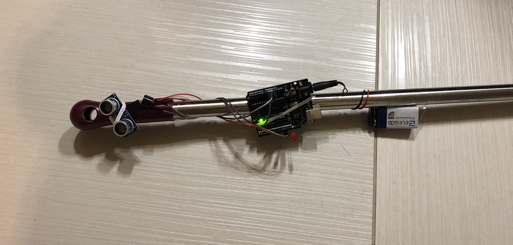
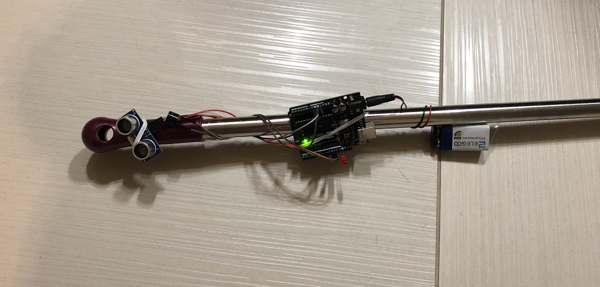

Final Project: Smart Blind Stick (SBS)

We’re HCDE; we design with other people in mind.
For the final project, I want to make something useful for people, so I decided to make a smart blind stick. With this design, people don't need to buy a fancy blind stick, which is very expensive; they can attach this circuit into any stick they want. A smart stick that helps people who are blind or visually impaired. It allows users to get to their destinations without colliding with obstacles.
Concept
For my project, I want to create a smart blind stick. Whereas a regular blind stick allows the user to feel objects when the stick hits it, a smart blind stick will be able to detect whether there’s an object within a certain amount of range. When the smart blind stick detects an object in front of it, the red LED will light up and it’ll make a sound. This allows the user to know that there’s an obstacle in front of them and give them time to change directions. I include my sketches here:


List of Materials
Arduino Ultrasonic sensor 9V battery and connector Active buzzer Red LED 220 Ohms resistor Wires Tape A long stickTo find the resistance of the LED, I used Ohm's Law: Voltage(Volts) = Current(Amperes) x Resistance (Ohms) First, I need to find the voltage of the resistance: V(total) = V(red LED) + V(resistance) <=> 5 = 1.8+ V(resistance) => V(resistance) = 5-2.8 = 3.2V Apply it to the formula, V = I x R <=> 3.2 = 0.02 x R => R(resistance) = 3.2/0.02 = 160 Ohms Because we don't have 160 Ohms resistance in the kit, so I used the 220 Ohms instead, and it's closest to 160! Also, the active buzzer has resistance too, but it's internal resistance so I wouldn't include here.
Here are my schematics:
The firmware (as a code snippet):
The smart blind stick will use an ultrasonic sensor to detect whether there’s an object in front of it. This will be the input stimulus. If there is indeed an object, the output will turn on a red LED light and a beeping sound from the active buzzer. If there’s no object, nothing will be turned on.
 In this code snippet, I added some comments to clarify my ideas and why I did it this way. It was very straight-forward and very easy to understand
I set the safety distance is less than 15 cm, because I want to allow user to have some time to adjust their movements and change directions.
The most confusing part here, I think, is to figure out the formula for the distance traveled. To calculate the distance, I use "distance = time x velocity"
I know that the speed of sound is 340 m/s, which is 0.034 cm/microsec (because I set the unit for the sensor is cm, so I need to convert from m/s to cm/microsec)
Then, divided by 2 because the waves go forward and backward.
In this code snippet, I added some comments to clarify my ideas and why I did it this way. It was very straight-forward and very easy to understand
I set the safety distance is less than 15 cm, because I want to allow user to have some time to adjust their movements and change directions.
The most confusing part here, I think, is to figure out the formula for the distance traveled. To calculate the distance, I use "distance = time x velocity"
I know that the speed of sound is 340 m/s, which is 0.034 cm/microsec (because I set the unit for the sensor is cm, so I need to convert from m/s to cm/microsec)
Then, divided by 2 because the waves go forward and backward.
My circuit and the operation:
 

.gif) Here's my demo video: https://www.youtube.com/watch?v=mIcqBd7RxRI&feature=emb_logo
I decide to not put the circuit in any box or somehow hide it, because I think people can attach it in the way they want; it doesn't have to be the exact order as I did.
Not only on stick, they can put it on their shoes, their wheelchair, etc.
Here's my demo video: https://www.youtube.com/watch?v=mIcqBd7RxRI&feature=emb_logo
I decide to not put the circuit in any box or somehow hide it, because I think people can attach it in the way they want; it doesn't have to be the exact order as I did.
Not only on stick, they can put it on their shoes, their wheelchair, etc.